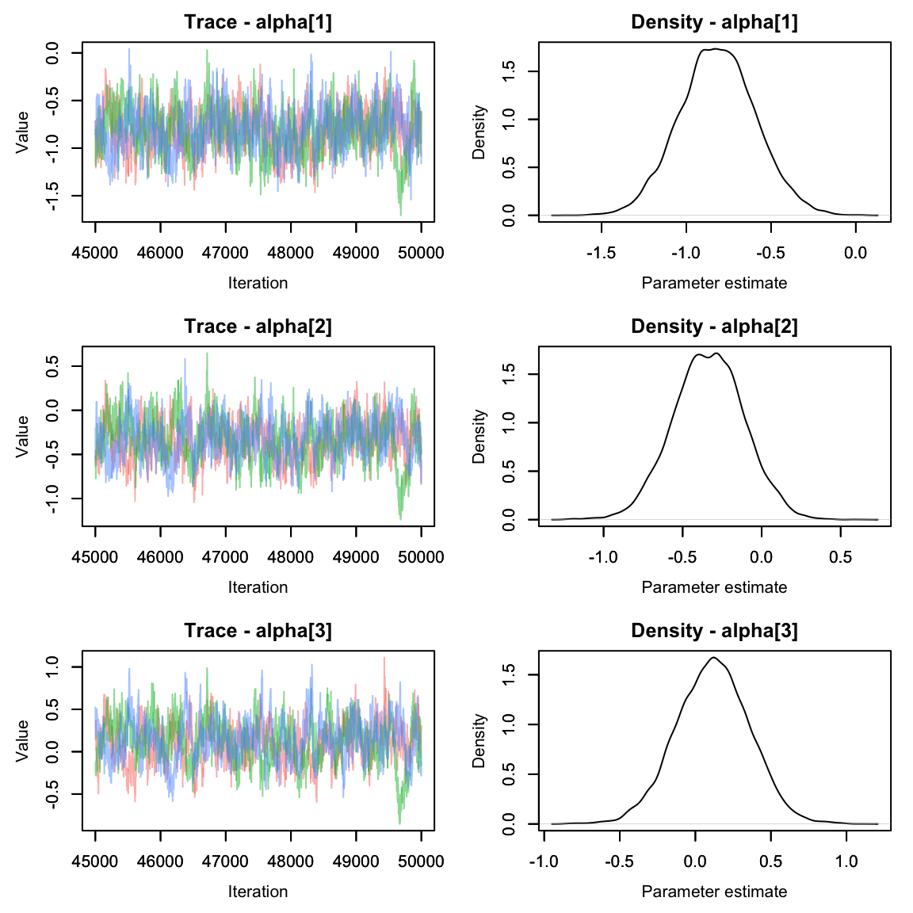
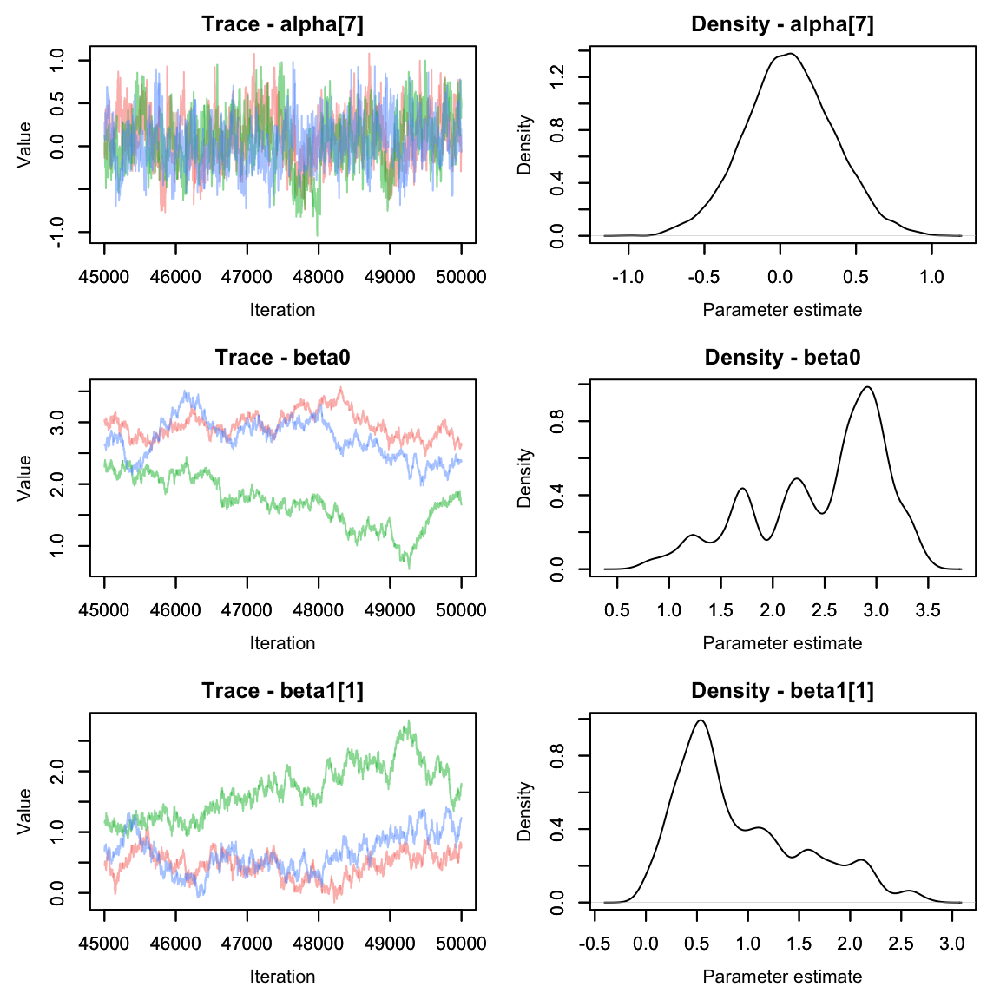
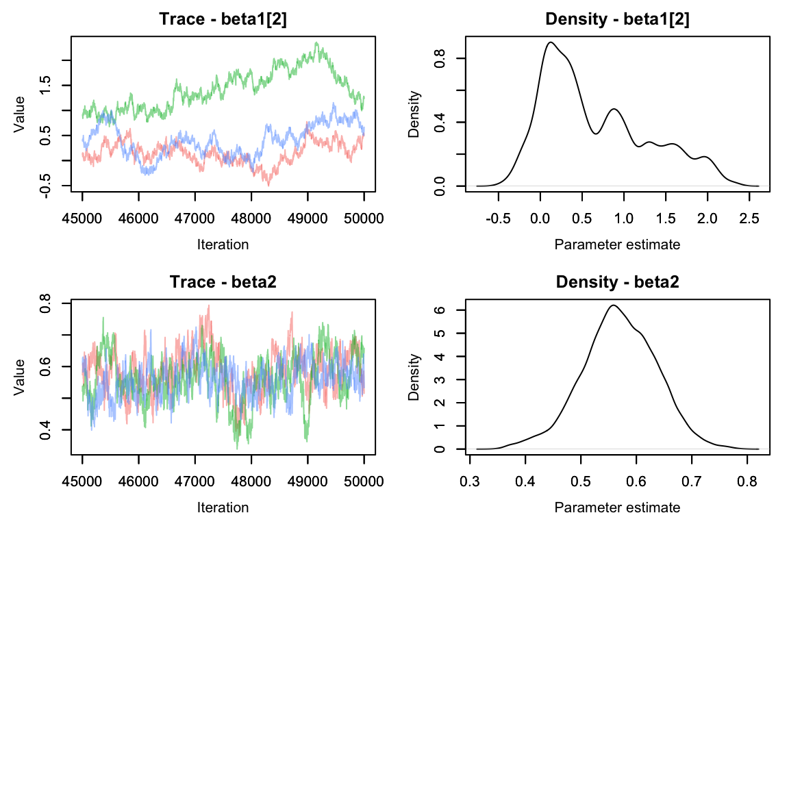
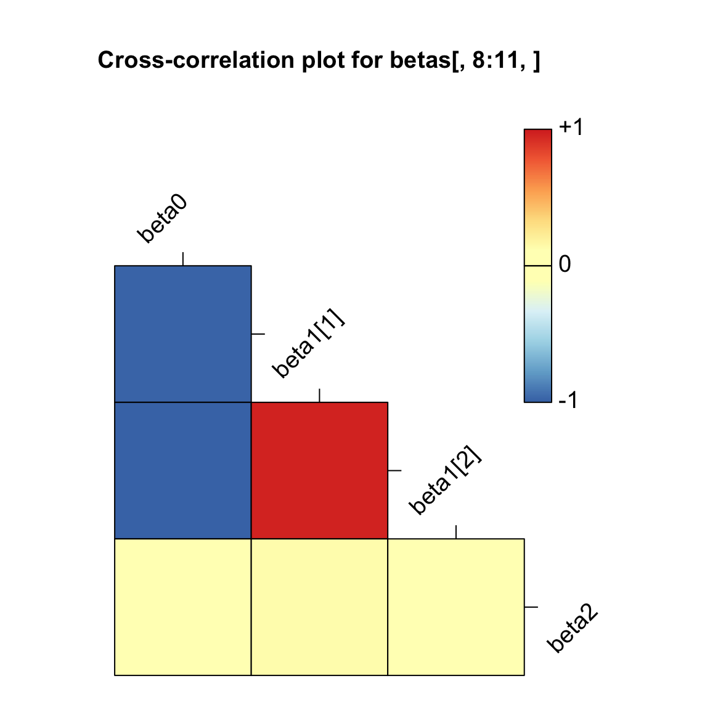
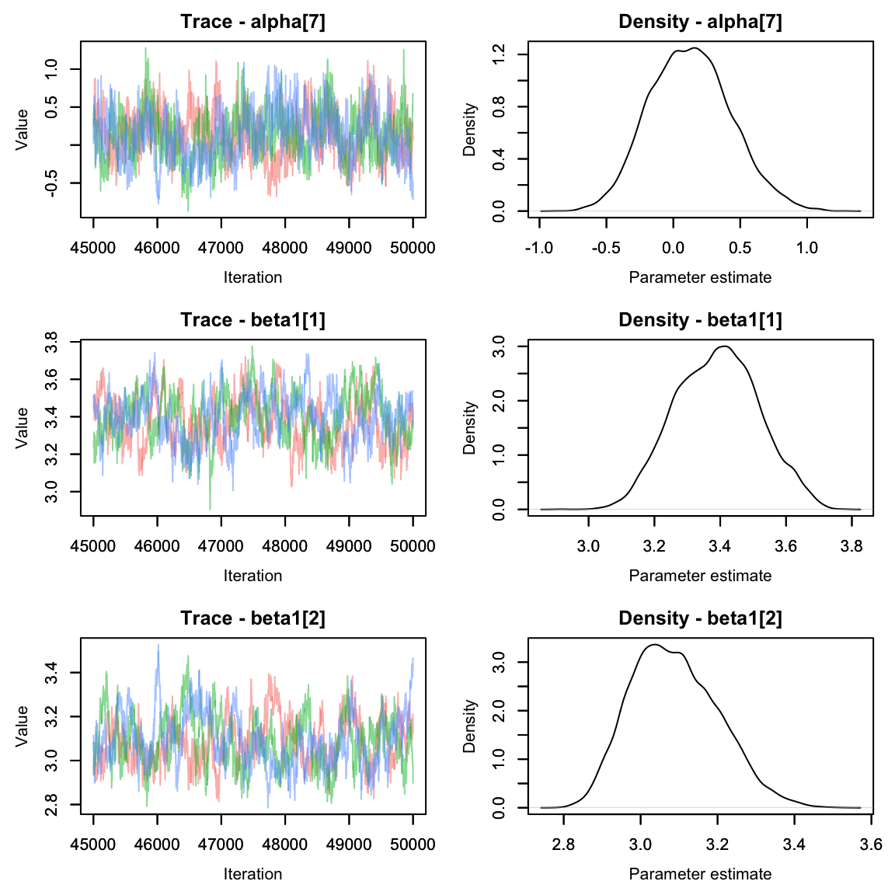
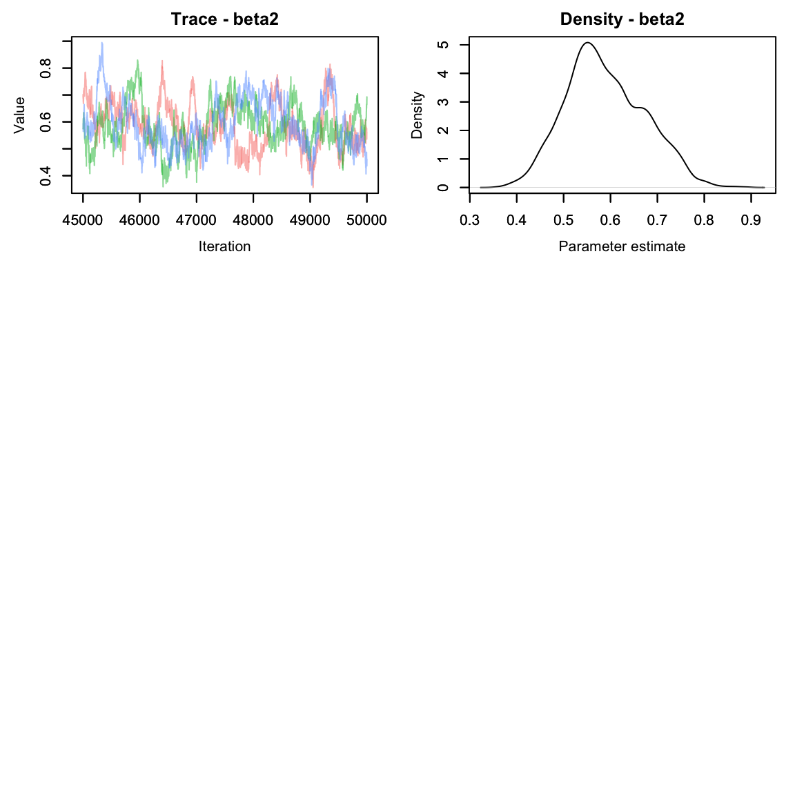
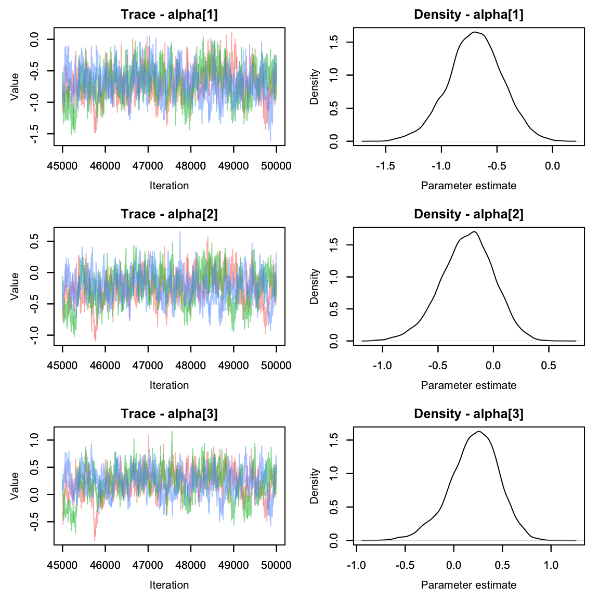
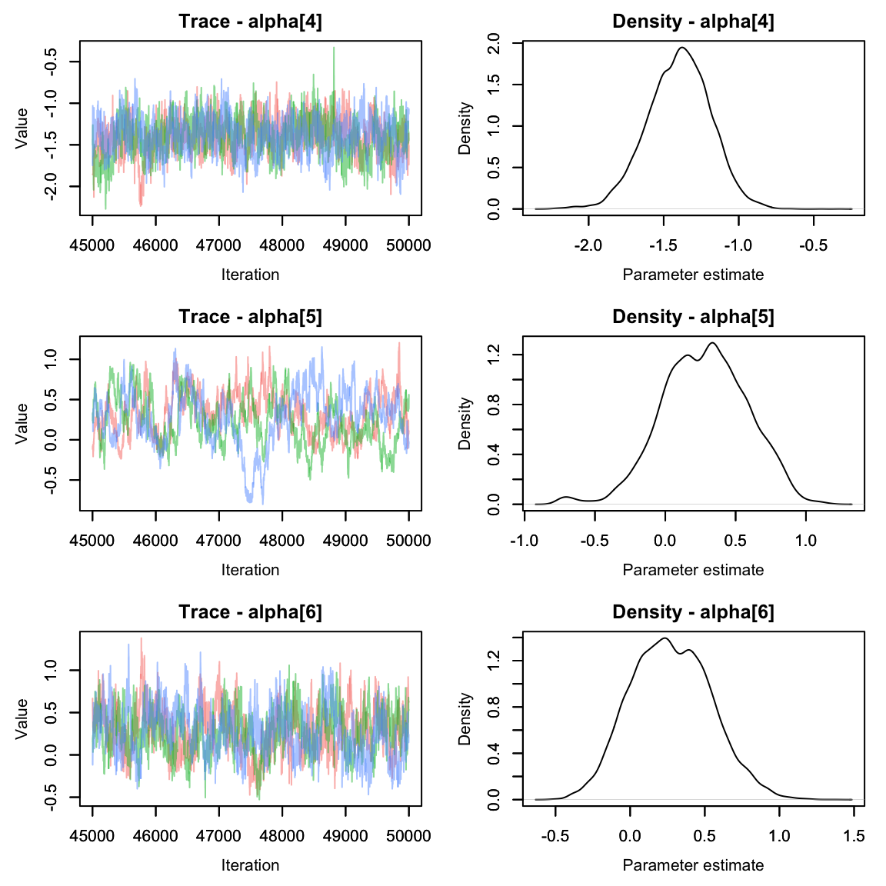
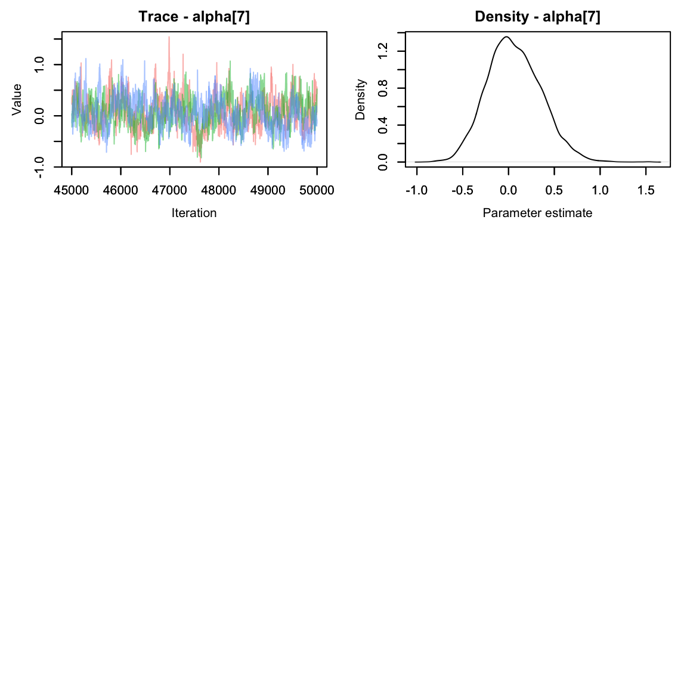
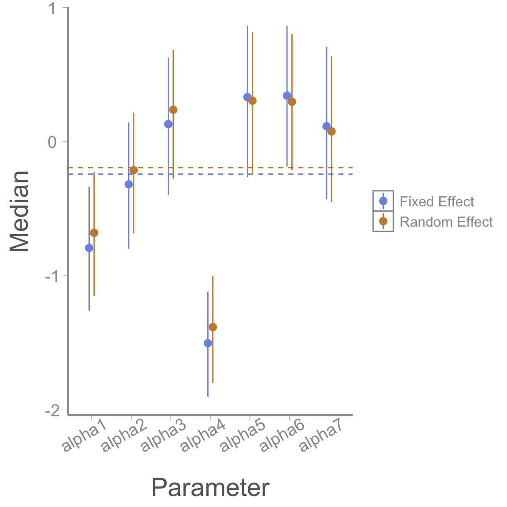

Lab6: Missing Data
Lab6_MissingData.RmdOver the past few weeks, we’ve covered a lot of the foundational concepts that you will need to build many, if not most, Bayesian models. In this activity we will combine the concepts of linear models, random effects and state-space models to practice what we’ve learned so far.
Objectives
Analyze data using both random and fixed effects
Deal with missing data
Gain experience with Nimble
European Hares
Data for today comes from the Swiss hare data included in Marc Kéry’s 2010 book, Introduction to WinBUGS for Ecologists. The data contain replicated counts of Brown hares (Lepus europaeus) conducted over 17 years (1992-2008) at 56 sites in 8 regions of Switzerland. Each year, two counts were conducted during a two-week period. Sites vary in area, elevation, and belong to two types of habitat (arable and grassland). You can read more about this study here: https://www.sciencedirect.com/science/article/pii/S0006320710004921?via=ihub

Let’s begin by taking a look at the data:
data("swiss_hares")
head(hares)
#> no site region site2 area elevation landuse year count1 count2
#> 1 1 AG01 CH.Central Reusstal 2.23 384 arable 1992 NA NA
#> 2 2 AG01 CH.Central Reusstal 2.23 384 arable 1993 NA NA
#> 3 3 AG01 CH.Central Reusstal 2.23 384 arable 1994 NA NA
#> 4 4 AG01 CH.Central Reusstal 2.23 384 arable 1995 6 4
#> 5 5 AG01 CH.Central Reusstal 2.23 384 arable 1996 7 5
#> 6 6 AG01 CH.Central Reusstal 2.23 384 arable 1997 3 3
#> mean.density
#> 1 NA
#> 2 NA
#> 3 NA
#> 4 2.691
#> 5 3.139
#> 6 1.345For now, let’s focus on hares in the Central region.
We can start with a simple model with no random effects and a binomial observation process. Since these are count data, a natural choice for the process model is a poisson with a log link.
Perhaps hare abundance is affected by the size of the site
(area) and the landuse type (landuse) and
detection probability is different between different sites
(site1).
Let i be a site (site1)
in the study area that was surveyed in year t.Then:
log(\lambda_{i,t}) = \beta_0 + \beta_1[landuse_i] + \beta_2*area_{i} N_{i,t} \sim Pois(\lambda_{i,t}) Further, let y represent the number of hares observed during survey k in a given year:
y_{i,t,k} \sim Binomial(N_{i,t}, p_{i})
p_i = ln(\frac{\alpha[site]}{1-\alpha[site]})
(Remember that writing ln(\frac{x}{1-x}) is the same as logit(f(x)). )
Building the Nimble model
We can more or less work backwards from the mathematical model to write our nimble model. Ignoring correct formatting, we have:
library(nimble)
library(coda)
nimbleCode({
#Process model
log(lambda[i,t]) <- beta0 + beta1[landuse[i]] + beta2*site_area[i]
N[i,t] ~ dpois(lambda[i,t])
#observation model
y[i,t,k] ~ dbinom(size = N[i,t],p =p[i])
logit(p[i]) <- alpha[site[i]]
})Now we can just add in loops to get the indexing correct and then choose some priors. Let’s start with making landuse a fixed effect.
hare_mod <- nimbleCode({
for(i in 1:nsites){
for(t in 1:nyears){
#Process model
log(lambda[i,t]) <- beta0 + beta1[landuse[i]] + beta2*site_area[i]
N[i,t] ~ dpois(lambda[i,t])
for(k in 1:2){ #could also do 1:ncounts[t] if we wanted to be fancy
#observation model
y[i,t,k] ~ dbinom(size = N[i,t],p =p[i])
}
}
logit(p[i]) <- alpha[site[i]]
}
#priors:
beta0 ~ dnorm(0, 1)
beta2 ~ dnorm(0, 1)
for(m in 1:nlandtypes){
beta1[m] ~ dnorm(0, 1)
}
for(j in 1:nsites){
alpha[j] ~ dnorm(0, 1)
}
})Now we can get our data, constants, and inits ready.
In Class Question
What parameters will need initial values?
What parameters and objects will need to be included in constants?
Missing Data Values
Now we come across a common issue - missing data. Not all sites were surveyed in all years. What to do? We could cut out years where not all sites are surveyed, but we’d end up throwing away a lot of data. We’re also still going to need to deal with the sites that were only surveyed once in a given year.
To solve this, we can adjust our code to also include a parameter for effort indicating if the site was surveyed in that session. If effort is 0, our detections for that survey round are also 0 (since we didn’t survey).
hare_mod <- nimbleCode({
for(i in 1:nsites){
for(t in 1:nyears){
#Process model
log(lambda[i,t]) <- beta0 + beta1[landuse[i]] + beta2*site_area[i]
N[i,t] ~ dpois(lambda[i,t])
for(k in 1:2){ #could also do 1:ncounts[t] if we wanted to be fancy
#observation model
y[i,t,k] ~ dbinom(size = N[i,t],p =p[i]*effort[i,t,k])
}
}
logit(p[i]) <- alpha[site[i]]
}
#priors:
beta0 ~ dnorm(0, 1)
beta2 ~ dnorm(0, 1)
for(m in 1:nlandtypes){
beta1[m] ~ dnorm(0, 1)
}
for(j in 1:nsites){
alpha[j] ~ dnorm(0, 1)
}
})Based on our code, we see that we need our observations in a 3-d array, with sites as rows, time as columns and sessions (1 or 2) as the third dimension. An easy way to turn character strings into numbers is to first turn them into factors, then convert them to numeric.
Central_hares$site_n <- as.numeric(as.factor(Central_hares$site))We can create an empty array for both y (our counts) and effort (a binary indicating if we surveyed).
y <- array(0, dim = c(length(unique(Central_hares$site_n)),
length(1992:2008),
2))
effort <- array(1, dim = c(length(unique(Central_hares$site_n)),
length(1992:2008),
2))Now we can fill in the arrays by using… wait for it… for-loops!
for(i in 1:nrow(Central_hares)){
mysite <- Central_hares$site_n[i]
myyear <- Central_hares$year[i] - 1991 #so that year 1 will be 1992
y[mysite, myyear, ] <- c(Central_hares$count1[i], Central_hares$count2[i])
}
effort[is.na(y)] <- 0 #if y is NA, we didn't survey
y[is.na(y)] <- 0 #if y is NA, that means our count is 0
hare.dat <- list(y =y) #for nimbleConstants
In nimble we need to separate data (stochastic known information) from constants (unchanging known information). Let’s make our constants list next.
constants_prep <- Central_hares %>%
mutate(landuse_n = as.numeric(factor(landuse))) %>%
group_by(site) %>%
summarize(
landuse = first(landuse_n), # Get the landuse type for each site
area = first(area), # Get the area for each site
.groups = "drop" # To remove grouping after summarizing
)
constants_prep$area_s <- scale(constants_prep$area) #scale the area
head(constants_prep)
#> # A tibble: 6 × 4
#> site landuse area area_s[,1]
#> <chr> <dbl> <dbl> <dbl>
#> 1 AG01 1 2.23 -0.861
#> 2 AG02 1 3.58 -0.573
#> 3 AG03 1 4.79 -0.315
#> 4 AG04 1 5.8 -0.0999
#> 5 LU01 2 16.5 2.18
#> 6 LU07A 2 5.85 -0.0892Initial Values
Now we need to initialize our model. Reminder that we need to initialize anything that comes from a distribution that is not already known. In this case, that means N, beta0, beta1, beta2 and alpha all need to have initial values.
There are many ways to initialize our model, but an easy way is often to set all betas to 0 except the intercepts. For N, we know that y is the result of N*p, so we can start N as max(y)/p for each site.
N.init <- array(NA, dim = c(hare.consts$nsites, hare.consts$nyears))
for(i in 1:nrow(N.init)){
N.init[i,] <- max(y[i,,])/.5 #can use .5 b/c the mean of the prior alpha is 0, which becomes p = .5
}
hare.inits <- list(beta0 = rnorm(1, 0, 1), #match the prior
beta1 = rep(0, 2), #effect of two land types
beta2 = 0, #effect of area
alpha = rnorm(hare.consts$nsites, 0, 1), #match prior
N = N.init
)Run the Model
Parallel Processing
In the past, we’ve run Nimble with 3 chains, one after the other. This is fine, but it means that we have to wait for each chain to be finished to start the next one. To save time, let’s run all three chains at the same time using our computer’s multi-core system.
For this to work, we’ll need to use the parallel package
in R. There are several ways to run parallel chains in R, but here’s my
preferred method. We begin by loading the parallel and
coda packages in R, and using the
makeCluster() command to prepare to run the three chains in
parallel
library(parallel)
cl <- makeCluster(3) #each chain will be run separately
library(coda)Next we export all the needed information to our cluster. This includes our initial values, data, constants, and model code.
clusterExport(cl = cl, varlist = c("hare.inits", "hare.dat", "hare.consts", "hare_mod"))Finally, we put all the relevant parts of the model run into the
clusterEvalQ() function. What I like about this method is
that you can first test out all the code by indivdiually running each
line inside the function and then run it all together once you’re
positive you’ve de-bugged everything.
hares.out <- clusterEvalQ(cl = cl,{
library(nimble) #reload packages for each core
library(coda)
#Specify params:
pars = c('beta0', 'beta1', 'beta2', 'alpha', 'N')
prepnim <- nimbleModel(code = hare_mod, constants = hare.consts,
data = hare.dat, inits = hare.inits, calculate = T)
prepnim$initializeInfo() #will tell you what is or isn't initialized
prepnim$calculate() #if this is NA or -Inf you know it's gone wrong
mcmcnim <- configureMCMC(prepnim, monitors = pars, print = T)
nimMCMC <- buildMCMC(mcmcnim) #actually build the code for those samplers
Cmodel <- compileNimble(prepnim) #compiling the model itself in C++;
Compnim <- compileNimble(nimMCMC, project = prepnim) # compile the samplers next
Compnim$run(niter = 150000, nburnin = 50000, thin = 2)
res <- (as.mcmc(as.matrix(Compnim$mvSamples)))
return(res)
}) #this will take awhile and not produce any progress bar.
#You know it's done when the hares.out object is created in your environment.
hares.out <- as.mcmc.list(hares.out)On my computer, this takes about a minute.
After you’ve run your model in parallel, it’s good practice to close the Cluster.
stopCluster(cl)Inspecting Output
Let’s take a look at what our model told us. We can start with the
beta and alpha values. We can use the grep function to only
select variables that don’t contain the word ‘N’ (abundance) in
them.
In this case, we’ll ask R for the column names in our first list
(chain 1) and then use grep to tell us which of those names
contains an ‘N’. Then we’ll save only those parameters without an N in
our new object.
Let’s plot the beta values using the MCMCvis package
 Oh dear. The alpha parameters look great, but the beta parameters look pretty terrible. We can see that the chains are having a lot of trouble mixing.
Often this can happen if parameters are not identifiable. It’s pretty easy to see why that would happen here - if the effect of area on abundance were 0, we’d be left with an equation that says abundance is the sum of two numbers and without more information it’s impossible to solve for both variables!
If you aren’t sure if two parameters are correlated (and potentially
unidentifiable), you can graph the correlation of the chains using the
mcmcOutput package.
library(mcmcOutput)
mcmcOutput::crosscorrPlot(betas[,8:11,], addSpace = c(0, 1)) In the above plot, we can see that beta0 has a strong negative correlation (about -1) with both beta1[1] and beta1[2]. No good.
Re-write the Model
Let’s fix our model by removing beta0.
hare_mod <- nimbleCode({
for(i in 1:nsites){
for(t in 1:nyears){
#Process model
log(lambda[i,t]) <- beta1[landuse[i]] + beta2*site_area[i]
N[i,t] ~ dpois(lambda[i,t])
for(k in 1:2){ #could also do 1:ncounts[t] if we wanted to be fancy
#observation model
y[i,t,k] ~ dbinom(size = N[i,t],p =p[i]*effort[i,t,k])
}
}
logit(p[i]) <- alpha[site[i]]
}
#priors:
beta2 ~ dnorm(0, 1)
for(m in 1:nlandtypes){
beta1[m] ~ dnorm(0, 1)
}
for(j in 1:nsites){
alpha[j] ~ dnorm(0, 1)
}
})We also need to remove the initial value for beta0 from our inits object.
hare.inits$beta0 <- NULLTime to re-run.
cl <- makeCluster(3) #each chain will be run separately
clusterExport(cl = cl, varlist = c("hare.inits", "hare.dat", "hare.consts", "hare_mod"))
hares.out <- clusterEvalQ(cl = cl,{
library(nimble) #reload packages for each core
library(coda)
#Specify params:
pars = c('beta1', 'beta2', 'alpha', 'N') #removed beta0
prepnim <- nimbleModel(code = hare_mod, constants = hare.consts,
data = hare.dat, inits = hare.inits, calculate = T)
prepnim$initializeInfo() #will tell you what is or isn't initialized
prepnim$calculate() #if this is NA or -Inf you know it's gone wrong
mcmcnim <- configureMCMC(prepnim, monitors = pars, print = T)
nimMCMC <- buildMCMC(mcmcnim) #actually build the code for those samplers
Cmodel <- compileNimble(prepnim) #compiling the model itself in C++;
Compnim <- compileNimble(nimMCMC, project = prepnim) # compile the samplers next
Compnim$run(niter = 150000, nburnin = 50000, thin = 2)
res <- (as.mcmc(as.matrix(Compnim$mvSamples)))
return(res)
}) #this will take awhile and not produce any progress bar.
#You know it's done when the hares.out object is created in your environment.
hares.out <- as.mcmc.list(hares.out)
stopCluster(cl)Grab the alpha and beta params again and plot
 Much better!
Random Effects
Up until this point, we’ve been treating detection probability as a fixed effect of the site. That is, there is no expected similarity between detection probabilities at different sites. Let’s try model this as a random effect instead and see how it changes our estimates.
Before we do that, let’s grab the current model’s alpha values so we can see how they compare.
Okay, now on to the model:
hare_mod <- nimbleCode({
for(i in 1:nsites){
for(t in 1:nyears){
#Process model
log(lambda[i,t]) <- beta1[landuse[i]] + beta2*site_area[i]
N[i,t] ~ dpois(lambda[i,t])
for(k in 1:2){ #could also do 1:ncounts[t] if we wanted to be fancy
#observation model
y[i,t,k] ~ dbinom(size = N[i,t],p =p[i]*effort[i,t,k])
}
}
logit(p[i]) <- alpha[site[i]]
}
#priors:
beta2 ~ dnorm(0, 1)
for(m in 1:nlandtypes){
beta1[m] ~ dnorm(0, 1)
}
for(j in 1:nsites){
alpha[j] ~ dnorm(0, sd = sd.site) #this is the change
}
sd.site ~ dexp(3)
})See how that works? When we use a random effect, we’re saying that
the average effect is 0, but each site’s specific beta is higher or
lower. The amount of variation from the mean is controlled by
sd.site, which will require a prior of its own. We can
describe alpha as a parameter and sd.site as a
‘hyper-parameter.’
Time to update our inits object with a value for sd.site.
hare.inits$sd.site <- rexp(1,1) #from the priorRun the model again:
cl <- makeCluster(3) #each chain will be run separately
clusterExport(cl = cl, varlist = c("hare.inits", "hare.dat", "hare.consts", "hare_mod"))
hares.out <- clusterEvalQ(cl = cl,{
library(nimble) #reload packages for each core
library(coda)
#Specify params:
pars = c('beta1', 'beta2', 'sd.site', 'alpha', 'N') #add sd.site
prepnim <- nimbleModel(code = hare_mod, constants = hare.consts,
data = hare.dat, inits = hare.inits, calculate = T)
prepnim$initializeInfo() #will tell you what is or isn't initialized
prepnim$calculate() #if this is NA or -Inf you know it's gone wrong
mcmcnim <- configureMCMC(prepnim, monitors = pars, print = T)
nimMCMC <- buildMCMC(mcmcnim) #actually build the code for those samplers
Cmodel <- compileNimble(prepnim) #compiling the model itself in C++;
Compnim <- compileNimble(nimMCMC, project = prepnim) # compile the samplers next
Compnim$run(niter = 250000, nburnin = 150000, thin = 2)
res <- (as.mcmc(as.matrix(Compnim$mvSamples)))
return(res)
}) #this will take awhile and not produce any progress bar.
#You know it's done when the hares.out object is created in your environment.
hares.out <- as.mcmc.list(hares.out)
stopCluster(cl)Let’s check out the alpha parameters from this version of the model:
alphas2 <- hares.out[,grep('alpha', colnames(hares.out[[1]])),]
MCMCvis::MCMCtrace(alphas2, pdf = F)
They seem to have mixed nicely. How do they compare to when we modeled alpha as a fixed effect? Let’s make a quick graph to compare.
mod1_alphas <- summary(alphas1)$quantiles
mod2_alphas <- summary(alphas2)$quantiles
gg_alphas <- data.frame(param = rep(paste0('alpha', 1:7), 2),
LCI = c(mod1_alphas[,1], mod2_alphas[,1]),
Median = c(mod1_alphas[,3], mod2_alphas[,3]),
UCI = c(mod1_alphas[,5], mod2_alphas[,5]),
Model = rep(c("Fixed Effect", "Random Effect"), each = 7))
library(ggplot2)
ggplot(gg_alphas, aes(x = param, y = Median, col = Model))+
geom_pointrange(aes(ymin = LCI, ymax = UCI), position=position_dodge(width = .25))+
xlab("Parameter")+
scale_color_manual(values = c('#7C94EC', '#C88B37'))+
geom_hline(yintercept = mean(mod1_alphas[,3]), lty = 2, col = '#7C94EC')+
geom_hline(yintercept = mean(mod2_alphas[,3]), lty = 2, col = '#C88B37')+
theme(axis.text.x = element_text(angle = 30, hjust = .75))
We can see numerically that the spread of the alphas is a little smaller for the second model.
Homework
- Last week we talked about prior predictive checks. Try running the model we just ran in lab (detection is a random effect of site) and running a prior predictive check. Plot out a few of the posteriors for lambda and y.
Hint: Instead of putting your data in the “data” object, put it in as an initial value. Other than your data, all other information (constants, params, etc.) is still the same.
When this data was formally analyzed, the authors used a random effect of year in the process model and a random effect of site in the detection process. Run the model with both of these random effects. Use ggplot to compare the beta1 values (the effect of landuse type on the expected abundance) produced by this new mode vs the model in Question 1. At a site with average area (scaled area = 0), what is the expected abundance for each land use type?
Since this is an abundance model, it makes sense to make a plot of abundance over time. Inside the model that you used for Question 2, create 2 derived parameterS that represents the total abundance of all sites of each landtype (one parameter for each landtype) in each year. Use ggplot to graph the estimated total average density by landtype over time, including the CIs. (Note: To get density, determine the total area of all plots of each landtype, then divide your estimates by this number).
To practice converting model code to the mathematical notation expected in a scientific paper, write your model for Question 2 in its full mathematical form, including priors.
On a 1-10 scale, with 1 being the worst week ever and 10 being the best, how would you rate this week’s content? What lingering questions/confusion about the lecture or lab do you still have?